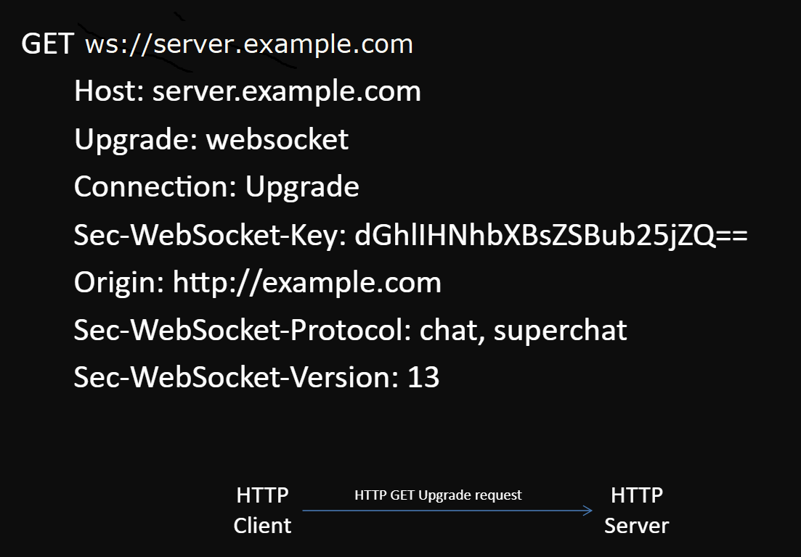

Alina Andrieieva
It is a protocol, that provides a way to exchange data between browser and server via a persistent connection.
The prime intention of the WebSocket protocol: to provide persistent real-time communication between the client and the server over a single TCP socket connection.
It is a permanent connection between the client and the server, using which the client and server can send data to each other at any time.
const ws = new WebSocket('ws://server.example.com'); // 80 port
const wss = new WebSocket('wss://server.example.com'); // 443 port
const socket = new WebSocket('ws://server.example.com');

const ws = new WebSocket('ws://echo.websocket.org');
ws.binaryType;
ws.readyState; // 0 – “CONNECTING”, 1 – “OPEN”, 2 – “CLOSING”, 3 – “CLOSED”
// EVENT HANDLERS:
ws.onopen = (e) => { ... };
ws.onmessage = (e) => { ... };
ws.onclose = (e) => { ... };
ws.onerror = (e) => { ... };
// METHODS:
ws.send(/*data - String, Blob, ArrayBuffer*/);
ws.close(/*code, reason*/)